婴儿积食，喝带籽的老荠菜水
荠菜的药性平和到连不满周岁的小婴儿也可以用。
婴儿如果积食，用带籽的老荠菜煮水喝就能调好，而且长大以后还不容易得胃病。
春天时采摘带籽的老荠菜，晒干以后收起来，可以用一整年。
老荠菜水
【原料】
带籽的老荠菜干。
【做法】
- 将老荠菜连根带籽晒干，掰成小段，装入大号茶叶罐。
- 每次取10〜30克，用沸水冲泡，闷10分钟后饮用。有条件煮水更佳（冷水下锅煮7〜8分钟）。
【功效】
降胃肠火，利湿健脾。
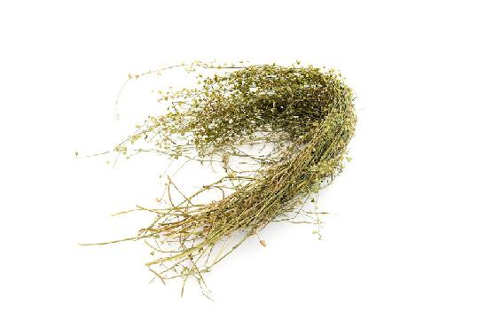
- 小孩感冒，老师说用葱须白煲水，或者隔水蒸大蒜放冰糖，一两次就见效了。现在南方很多荠菜，我去采老的回来晒干，煲水给宝宝喝，眼屎没有了，积食（口气酸臭）煲两三次喝，也好了。我让家人也煲水来喝。我老公天天说，吃6粒三黄片都比不上一碗荠菜水。
——紫缘物语
- 前段时间我家宝宝白天吃西瓜，晚上睡觉蹬被子。早上起床赶紧煮荠菜水，让带一杯到学校喝。她大概感觉不舒服，上午把一杯水全喝完了。没拉肚子，吃饭也正常。
——熙月
- 前几天我的舌苔厚、黄，有口气，整个人有气无力，精神萎靡，想着可能是前几天鸡蛋和荤菜吃多了，腻住了。我给自己这样调理：饭后吃保和丸，用荠菜水代茶，才两天，舌头变得粉粉的，整个人都精神了。
——12群读者
- 昨天午饭后胃一直不舒服，到了晚上疼得忍不住了，想起买的有荠菜干，立马抓了一把来煮，喝了浓浓的一杯，不一会儿胃就舒服了。继续喝了几杯，就没事了。
——38群玟妤
- 昨天给孩子喝了荠菜水，发现孩子时不时的咳嗽声没有了。
——谢雨轩
- 今天给孩子们煮了荠菜水，宝宝说，妈妈怎么喝完了就要上厕所啊！我告诉他荠菜是可以帮助他排毒的！他似懂非懂地点头，我哈哈大笑。可能宝宝肚子有点胀气吧，所以喝了荠菜水就把不干净的气排了！
——简单着幸福
- 大儿子有点咳嗽，我判断是积食咳嗽，用荠菜切段煮水。他喝了一碗，已好了一半。明天继续！
——小儿推拿
- 我有点上火，有点胃积食，上颌还长了个泡，有点痛。今天收到荠菜，立马煮水喝，1个小时后，嘴巴不痛了，胃里也没有火烧火燎的感觉了。神奇，神奇，太神奇了！
——魏娜
- 这两天我儿子突发高烧，我用推拿和荠菜水给他退烧，今天完全好了，胃口又大开，吃了很多饭。下午还给他煮了白米粥，晚上也吃了饭。
——41群班长
孩子积食引起夜间咳嗽，喝二皮止咳饮
很多人认为梨可以止一切咳嗽，家里孩子咳嗽，就给他炖梨来吃。结果越吃越咳，痰更多。
其实，小孩咳嗽基本上有一个诱因——积食。积食就会生痰，所以不能给他吃冰糖炖梨。
如果咳嗽伴有黄痰，特别是晚上睡觉时咳，可以用梨皮加上萝卜皮一起煮水给孩子喝，又顺气又消食又化痰，孩子就不咳嗽了。
二皮止咳饮
【原料】
鲜梨1个、新鲜白萝卜1个、蜂蜜适量。
【做法】
- 把梨和白萝卜放在加面粉的清水中泡10分钟，清洗干净。
- 削下梨皮和白萝卜皮，切碎，水开后下锅煮3〜5分钟，加蜂蜜饮用。
【功效】
- 调理孩子积食咳嗽，痰少而黄。
- 清热，消炎，消食。
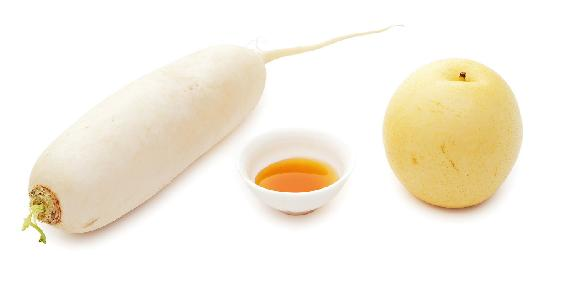
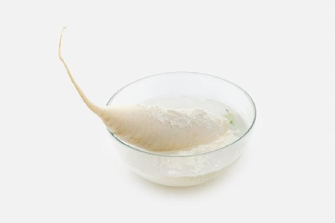
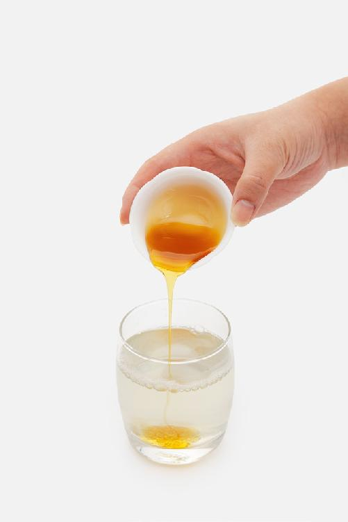
如果还有鼻涕多的症状，可以加一段葱白同煮。
读者评论
- 去年冬天用到了二皮止咳饮，喝了三次，痰基本就没有了。
——虎仔
- 我觉得二皮止咳饮效果特别好，特别棒。我孩子两岁，每次孩子咳嗽，我首先观察孩子舌苔，确认是积食了，我赶紧煮萝卜皮梨皮水给孩子喝，都能很快化解，一般当天或者第二天就没事了。真的很感谢陈老师！
——悠然见南山
- 用鱼腥草、萝卜皮、梨皮煮水，女儿昨天下午喝了后，白天偶尔咳一下，晚上竟没咳了。孩子咳了一个星期，昨天晚上我终于睡了一个整觉！
——青雨-桂林
- 女儿学校感冒的人很多，女儿也感冒了，但是没有吃药哦，用了陈老师的食方鱼腥草梨皮萝卜皮水。
——兰兰（马兰花开）
- 周五儿子吃多了甜食，晚上就开始不停咳嗽，我找班长讨论，确定是积食造成的。开始让孩子喝梨皮萝卜皮水，一天都不停地咳，下午又轻微发热，我比较心急，总怕判断失误耽误病情。又问了班长，班长说只要对症，选好方子就坚持用，不要着急，要顺其自然等等看。一直到周日中午还是咳嗽，但我没给他停过喝双皮水，刚才突然发现，一两个钟头都没听到儿子咳嗽了，已经好得差不多了。两天一共用了2个萝卜、4个梨。真是省心省力又省钱，小孩也不用吃大把的药。
——5群读者
孩子咳嗽没有痰，流清鼻涕，喝葱白双皮饮
如果孩子突然轻微咳嗽，没有痰而有清鼻涕的话，那可能是受了一点风寒，可以喝双皮葱白饮。
葱白双皮饮
【原料】
一个梨的皮、半个萝卜的皮、葱白（连根须一起）三根。
【做法】
用葱白连须，加上萝卜皮和梨皮，煮水喝。
【功效】
喝了以后，清鼻涕会很快止住，咳嗽也能缓解。
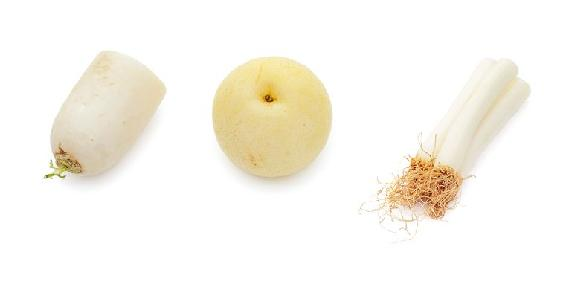
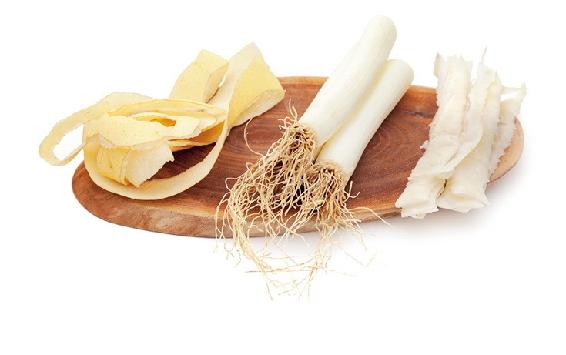
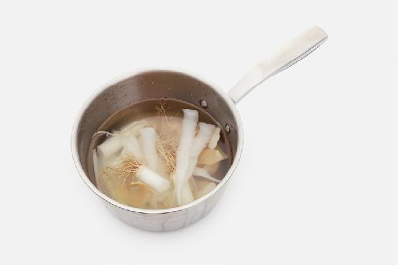
- 如果孩子不喜欢葱的味道，可以加一点蜂蜜。
- 这个方子用于风寒咳嗽初起。如果严重或长期咳嗽，需要用其他方法调理。
小儿长期咳嗽，喝百日咳茶
这个茶方适合久咳不止并且伴有黄痰的情况，比如咽炎咳嗽、儿童久咳、 支气管炎、百日咳。
什么叫作百日咳呢？
狭义地说，它是一种百日咳病毒引起的咳嗽，是具有传染性的。
广义地说，对于一些久咳，咳了两三个月还不好的咳嗽，人们有时也泛称为“百日咳”。
这款茶对于这两种咳嗽，都是有效果的。
百日咳茶
【原料】
罗汉果6个、柿子蒂20个。
【做法】
- 把罗汉果压破，掰开，连皮带子和柿子蒂一起放入锅中。
- 冷水下锅煮开后，转小火煮40分钟左右，滗出茶汁。
- 再次加水煮开，转小火煮40分钟，滗出茶汁。
- 把两次的茶汁合在一起，放入冰箱冷藏，可以放一星期。
- 每次取大约1/3杯，放入随身杯，加开水温热饮用。
【功效】
- 止咳化痰。
- 预防小儿百日咳。
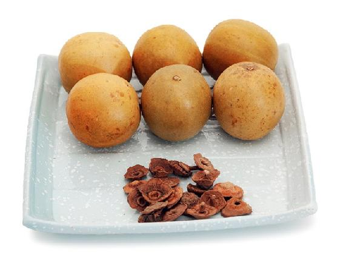
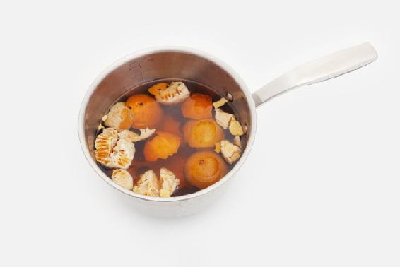
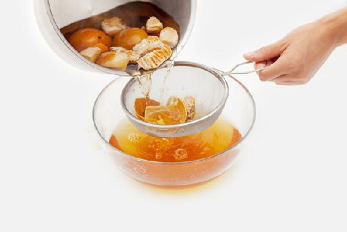
允斌叮嘱
- 吃了柿子，柿子蒂不要扔掉，洗净晾干保存起来就可以随时用了。
- 绿色的罗汉果（低温烘干的）比棕色的罗汉果（高温烘干的）煮水味道更好，孩子更能接受。
- 罗汉果柿子蒂茶很好，我儿子感冒后咳了很久，鱼腥草、罗汉果，单独喝了没效果，后来用罗汉果加上柿子蒂一起煮水给他喝，喝了两三天就不咳了。
——淡然
- 我一直痰多，半夜有些咳嗽，就坚持煮罗汉果柿子蒂茶喝，效果杠杠的。
——阿雪
- 最让我有成就感的就是百日咳茶方，老公干咳一个多月，干咳方、寒咳方、热咳方都用了还是不行。就要放弃的时候，看到《顺时生活》中百日咳方配上吴茱萸贴公孙穴的方法，三天就把老公的咳嗽治好了。
——沉淀
- 邻居家一个小姑娘咳嗽，有点严重，我给她脚上贴了吴茱萸调醋，再喝罗汉果＋柿子蒂水，当天晚上就不咳了，睡得很香。帮了自己的孩子，也帮了别人的孩子，很有成就感！
——澜羽
- 我儿子昨天一直不停地咳嗽，我用罗汉果加柿子蒂煮水，昨晚让孩子喝了一次，晚上虽然还有点咳，但好多了，不会一直连着咳。今早又喝一次，上午几乎不怎么咳了。
——罗海珠
- 孩子6岁以前经常晚上咳嗽，接着感冒，吃药后感冒能好，但咳嗽总不好。这次又咳嗽了，用罗汉果柿子蒂煮水三遍给孩子喝，当晚就不咳了；接着喝了六天，再没咳。一直心疼孩子吃那么多抗生素，现在终于摆脱吃抗生素药的困扰了。
——云卷云舒
- 罗汉果柿蒂水，小孩喝了后晚上没咳嗽了，继续坚持！
——羽灵
- 朋友半个月前说她咳嗽好长时间也没好，我推荐她喝百日咳茶。昨天和朋友见面了，她说我给的方子真好，喝了两天就不咳了，太感谢了。
——25群平
- 前不久孩子支气管炎，用了陈老师的方子——煮罗汉果柿子蒂，喝了两天，宝贝的支气管炎好了，让宝贝少受了很多罪。
——13群小叶
- 孩子咳嗽，喝了几天罗汉果柿子蒂水就好了，感谢老师。
——静伟
- 昨天下午给儿子煮了百日咳茶喝，儿子说喝了后咽喉舒服多了，所以今天一大早就又给煮上了。
——陈兰芳
- 去年入秋不久家人开始咳嗽，以前一咳就是两三个月。家人的症状很像陈老师说的气逆咳嗽，我就用罗汉果加柿子蒂煮水，柿子蒂加大了用量，一个礼拜咳嗽好转，再喝一个礼拜就不咳了，好开心。
——罗小黄
- 我老公干咳已经很多年了，照老师说的，千日咳都不止了，三伏贴、中西药还有针灸都用过，效果不怎么样。这次试了老师治疗百日咳的食疗方法，罗汉果柿子蒂老白茶煮水，才喝了三天，我已经很久没听见老公咳嗽了。我老爸也喝了些，说痰少多了！真神了！
——冉冉妈妈
- 这两天有点咳嗽，熬了罗汉果柿蒂水，喝了感觉好多了。好神奇。
——宁静致远
- 罗汉果柿子蒂茶喝的第二天，白天基本不咳嗽了，但是一躺下睡觉还是咳嗽。不能好点就不忌口，明天严格控制饮食。
——月也兔
预防手足口病的茶方：马齿苋抗病饮
这是我的一个经验方，我的儿子小时候得手足口病都用它来调理。
每年夏季是手足口病和疱疹性咽峡炎的流行期。疱疹性咽峡炎是轻症，发在咽部。手足口病更严重，发在全身。所以手足口病被定为法定传染病。
这两种病看起来像感冒，孩子会咽痛或咳嗽、发热，实际上它们都是由肠道病毒引起的。用抗生素和感冒药无效，家长注意不要用错药，不要盲目退热，而是应该及时清除肠道内的病毒，防止病毒在肠道内大量繁殖。
马齿苋有强大的抗菌能力，对肠道的保护作用尤其好，能排出肠道毒素。
马齿苋抗病饮
【原料】
马齿苋（鲜品）500克、蜂蜜适量。
【做法】
- 将新鲜马齿苋用加面粉的清水泡10分钟，清洗干净，再用开水淋一遍。
- 切碎，加少量清水放入榨汁机打成汁液。
- 放入锅内大火烧开，晾凉后加入蜂蜜，放入冰箱冷藏，可以放三天。
- 需要时倒入随身杯饮用。预防小儿手足口病，在此病流行季节可以每天饮用1杯。
【功效】
- 预防手足口病。
- 清除肠道病毒，双向调节肠道，通便、止痢。
- 预防少年白头。
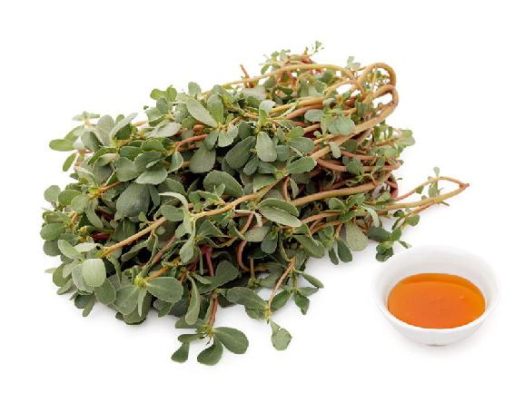
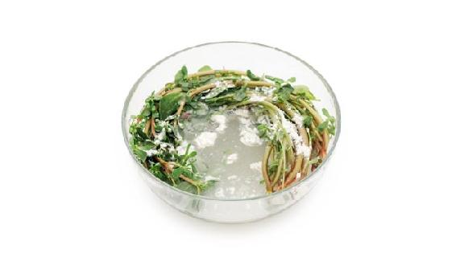
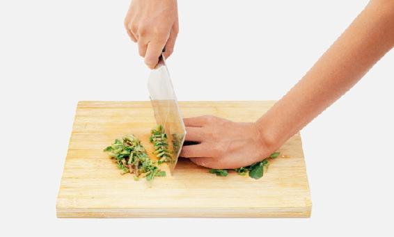
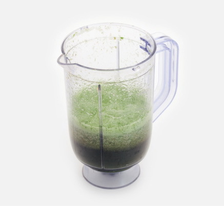
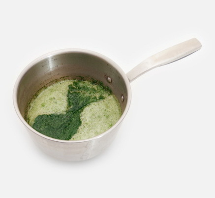
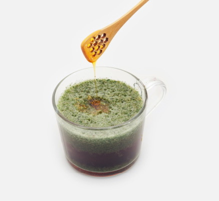
- 如果孩子密切接触过手足口病病人，并且已有便秘、食欲减退的表现，可以直接喝鲜榨的马齿苋汁，无须加热，效果更强。
- 得过手足口病的孩子并非从此高枕无忧，还是要避免再次接触手足口病毒。原因是病毒一旦变异，免疫力就会失效。成年人也可能“隐形感染”。如果家有患儿，建议家长也吃些马齿苋，帮助自身肠道排出病毒。
- 孩子3岁时在幼儿园感染了手足口病，就是喝陈老师介绍的马齿苋煮水治好的。
——Village
- 我儿子当初也得过手足口病，用了马齿苋榨汁，第二天就好了。
——6群读者
- 我儿子手足口病，吃了三天的马齿苋加白糖，神奇般地好了。
——劳会然
- 2005年时儿子发高烧，蚕沙水退不了。到医院化验血，C-反应蛋白90多。回家后吃马齿苋，三小时后拉了一泡稀，然后退烧，好了。
——天然呆
- 老师的方子真是管用呀！我朋友的孩子，5岁，咽峡炎，已发烧几天，吃药不管用，嘴里长满白斑，不能吃饭，不能喝水，疼痛不堪。摘了一些马齿苋给他们，嘱其回家榨汁拌白糖。昨晚喝了一次，今天早上看喉咙已经好了很多。
——6群读者
- 老大5岁左右时，有一天和一个得手足口病的小朋友玩了很久（事后才知她有手足口病），我晚上就给她用生的马齿苋榨汁喝。那么容易被传染的手足口病，竟然幸免被传染。
——雷雷
- 前几天，朋友的孩子先是发烧，后来才发现是手足口病跟疱疹性咽峡炎，我马上让她去找马齿苋榨汁给娃喝。她一天给娃喝一次，喝了三天左右，就排便了。腿上手上的疹子喝完的第二天就没这么红了，嘴巴里的也有好转的迹象。到了昨天她跟我说，差不多完全好了。用了老师的方子，她感叹道，世间万物太神奇了，只是被我们遗忘了。
——裥箪点
- 孩子突然高烧40℃，医生说是喉咙发炎，然后开了一堆中药、西药，回来吃了一天还是反反复复地40℃，甚至还烧到了41℃。第三天又去医院，医生还是开了一堆药，班长说是不是咽峡炎，我马上找手电筒看了，果然喉咙有疱疹。立马去买了马齿苋，停用了医院开的所有药，只用马齿苋煲水喝。孩子由于发烧几天没上大号了，第二天早上起来拉了一大泡。然后连续喝了两天马齿苋水，后面都是36.7℃了！退烧后有些咳嗽，连续煲了两天的鱼腥草罗汉果陈皮水，第三天就停了！从喝马齿苋水开始就没再用医院开的药，全扔垃圾桶了！隔壁家那个孩子和我们一起生的病，她孩子选择了吊瓶子，一直吊了十多天都还是反反复复40℃！
——桓
- 每年夏天，市场上一块钱一把的马齿苋，我几乎天天吃，也给孩子一起吃，孩子从没有得过手足口病。听说一些亲戚朋友家的孩子得了手足口病，命差点没了，在医院里遭了很多罪。
——读者朋友
- 我家小宝某个周六的时候，突然身上起红点，到了晚上嘴里、手脚都有，去医院检查医生确诊手足口病，建议住院。那时候刚接触陈老师没多久，但坚定地相信她。我没有办住院带孩子回来，家里的花盆刚好长了很多马齿苋，就榨汁给孩子喝。但当时孩子还太小，不接受这个味道，又赶紧去中药房买干品的马齿苋煮水，加了点蜂蜜。孩子用奶瓶喝了200毫升，到了下午拉了很多黑便便，烧退了，身上的痘痘也慢慢消除。那次是一粒抗生素药都没有用过，就挑战手足口病成功。当时真是太开心啦！从那时起，孩子的爸爸对老师是无比地佩服和相信，孩子有什么小毛病，他都会配合我，支持我用老师的方法处理。
——厦门好奇宝宝
- 不知道是不是采灰灰菜过敏了，胳膊起了一片包。用马齿苋加水打汁涂抹几次后，又用经络梳梳，今天好了，包下去了！马齿苋太好了！最近都在吃！
——31群武楠
孩子积食引起腹泻，喝山楂胡萝卜茶
因吃肉食过多引起消化不良，进而导致腹泻和咳嗽，可以用干山楂、胡萝卜煮水喝。
山楂胡萝卜茶
【原料】
焦山楂30克、胡萝卜半根。
【做法】
- 将干山楂（生山楂）放入炒锅，无须放油，干炒几分钟使其变焦。
- 胡萝卜切小丁，与焦山楂一起煮水20分钟后，滤出汁饮用。
【功效】
- 调理吃肉食过多消化不良引起的腹泻和咳嗽。
- 顺气，化痰，促进消化。
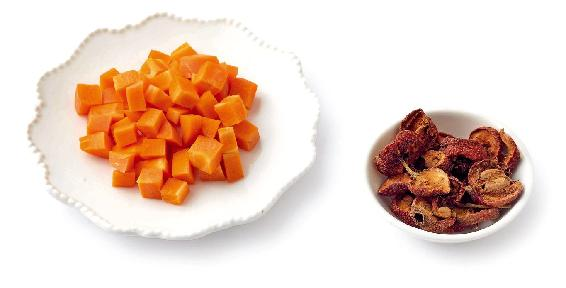
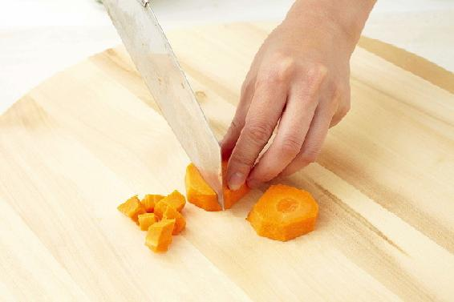
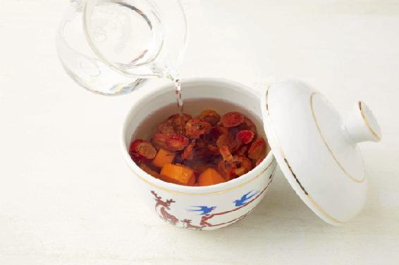
读者评论
我家孩子从小爱积食，山楂胡萝卜水是用得最多的，好喝又好用。
——怡
高考生、中考生紧张压力大，喝蜂蜜醋水减压
考前的紧张焦虑会影响肝脏系统的功能，喝点蜂蜜醋水有排毒、舒缓压力的作用。
蜂蜜醋水
【做法】
每天晚上，用1勺醋加1勺蜂蜜加一杯水调成蜂蜜醋水，给孩子喝下。
【功效】
减压、清洁肠胃，还可以缓解孩子紧张失眠。
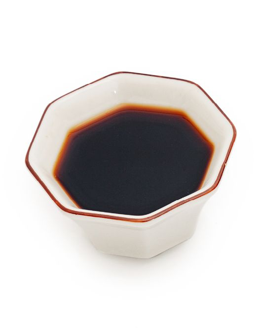
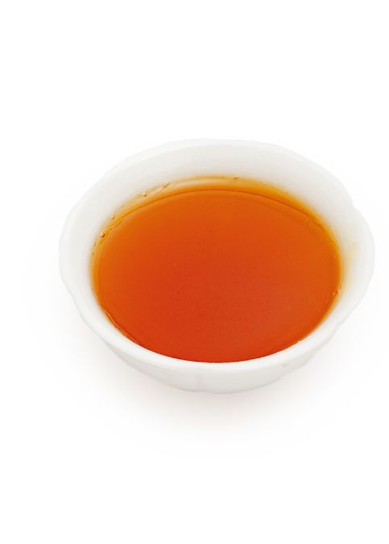
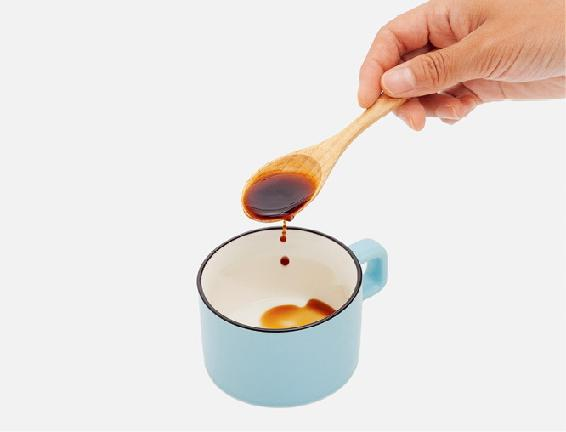
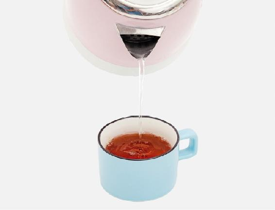
调蜂蜜醋水的时候，水温不要高过40℃，否则会破坏蜂蜜的营养。另外，蜂蜜是安神的，如果早上喝，不要加太多。
高考生、中考生心烦睡不好，喝一杯莲子心甘草茶
大考临近，考生心里的紧张感会越来越强，心火往往会变旺。此时正是初夏，天气越来越热。内热外火夹在一起，有些孩子舌头就长出溃疡来了，晚上睡觉觉得心里烦热，翻来覆去睡不好。这时候，可以喝一道清心助眠茶。
甘草能解热毒，又能补心气。
莲子心虽然寒凉，但不凉胃，而是专去心火。而且它可以交通心肾，可用于调理心肾不交型失眠。
莲子心甘草茶
【原料】
莲子心2克、甘草3克。
【做法】
将原料放入杯中，沸水冲泡。
【功效】
- 调理心烦失眠。
- 生津止渴，清心火。
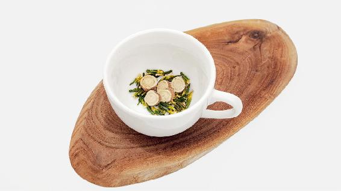
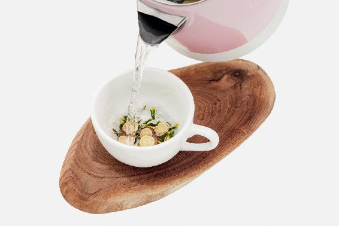
用拇指、食指、中指轻轻捏起一撮莲子心，差不多就是2克；而3克甘草的量，差不多是6小片。
- 最近（学校）心火旺的孩子很多，晚上睡觉翻来覆去。用陈老师的莲子心甘草茶，一次效果就灵；试一个，灵一个。
——铃铃＋南昌
- 这些天被失眠折腾得很惨，各种办法都试了还是不行。晚上躺在床上睡不着，突然想起莲子心甘草茶了。会不会是上心火了呢？这下找到根源了，喝了一天就能安睡了！
——兰亭秋雁
- 莲子心甘草茶解决了姐姐多年的口腔溃疡问题。了解自己和家人的体质，及时对症食疗，得到了非常好的疗效！
——JANE将近
- 这两天睡得不踏实，一看是舌尖红，属于心火旺。昨天晚上煮了一碗莲子心甘草茶，昨天晚上一夜好眠。
——台州—清秋
- 前天感觉人很烦躁，睡眠不好。昨天起床后就发现舌尖红肿、疼痛。睡前喝了一杯莲子心甘草茶，整晚睡到天亮，今天起床舌尖也完全好了。
——蛙
- 喝了莲子心甘草茶后口腔溃疡很快愈合。跟着老师节气养身的步伐，现在口腔溃疡都很少复发了！以前只要口里起泡就会溃疡，用啥都没效果。现在即使起泡也能自己愈合！
——小晖晖
- 这几天去心火，喝莲心甘草茶，眼睛的红血丝好多了。
——麻春敏
- 太神奇了吧！昨晚我就喝了一次莲子心甘草茶，晚上睡了6个多小时，今天中午也睡了快2个小时！要知道，我已经连续六天晚上只睡4个小时，中午睡不着了。
——12群读者
- 喝了一天莲子心甘草茶，眼睛的红肿消下去了。
——眼镜&姐姐
- 莲子心甘草茶喝了一天，舌头尖真的没有那么疼了。
——李逵
- 我女儿高考第一天中午回来跟我说，一进考场就打喷嚏，出汗，流清鼻涕。我判断她太紧张了，翻书看到这个症状反应是气虚型感冒，我好心焦，立马按老师的方子煮了红枣姜大米粥，让她午睡前喝一碗，起床后又喝一碗。又泡了莲子心甘草茶给她喝。下午考完问她状况，她说下午完全好了。晚上我又煮艾叶水给她泡脚，第二天考完试回家说，今天的状态超级好。感谢遇见老师，要不真不知该怎么办才好，特别是高考这么重要的日子。
——韦小芳-广西
- 我昨天吃了小龙虾，还有其他很辣的菜，我通常一吃辣的就要失眠、喉咙痛、咳黄痰，所以我吃完回来就赶紧去买了莲子心和甘草。回家先用半根牛蒡去嗓子的火，果菊清饮一直都在喝，用乌梅大枣止汗（这几天出汗多），快来例假了还喝了益母草方，睡前喝了莲心甘草茶，贴上吴茱萸足贴就去睡觉。一早起来，喉咙、舌头全都好好的，太开心了！
——32群KEKE
- 我女儿高考第一天回来跟我说，一进考场就打喷嚏，出汗，流清鼻涕，我判断她是气虚型感冒，立马煮了红枣姜大米粥，让她在午睡前喝一碗，起床后又喝了一碗，又泡了莲子心甘草茶给她喝，下午完全好了。晚上我又煮艾叶水给她泡脚，第二天考试状态超级好。感谢遇见老师！
——50群韦小芳
这是我给正在读中学的儿子特配的保健茶方，在秋冬季每天煮给他喝。
现在的学生学业非常繁忙，这样很亏气。白天上学也不能吃到家里的饭。再加上青春期和学习的压力，情绪的积压也易伤身体。因此青春期的孩子很需要补一补，但不能像大人那样大补，要“清补”，一边补一边排毒，才不会补上火。
加强版梅子汤
【原料】
乌梅6个、川陈皮1/4到半个、大枣6个、山楂10克、甘草5克、黄芪30到50克、罗汉果1个、牛蒡（20克以上）、玫瑰花30克、枸杞子（不限量，可以多一些）。
【做法】
玫瑰花、枸杞子不下锅，先将其他材料煮40分钟，再放入玫瑰花，煮1分钟关火，加入枸杞子，晾温后饮用。枸杞子可以吃掉。
【功效】
调和气血，排毒，减脂。
- 这个茶方大人喝也很好，孕妇需要减去山楂。
- 女生经期不饮。
- 枸杞子多放一些效果才好。
- 昨晚出去风很大，回家后感觉头及嗓子都不舒服。早晨煮了加强版甘草陈皮梅子汤，对解决咽喉方面的问题太有效果了，今天感觉好多了。
——品茗赏鱼
- 前几天舌头疼，估计是长了溃疡，第二天煮了加强版乌梅汤，突然发现舌头疼的现象不知道什么时候不见了，真是高兴！
——禾惠
- 以前，我只在夏天喝冰镇酸梅汤，看了陈老师的文章才知道酸梅汤还可以治病。去年秋天我坚持喝了一个月的酸梅汤，最大的效果就是，现在去外面吃饭不会拉肚子了。有这种症状的朋友也可以试试！
——玲
- 我女儿感冒咳嗽，中西医都看了，吃了好多药也不见好。后来想起了陈老师讲的罗汉果酸梅汤，喝了两天奇迹就出现了，居然不咳了。
——风和日丽
儿童防感冒咳嗽积食小茶方：橘香梅子汤
加强版梅子汤是日常调理气血的，它可以随季节而增加不同食材，调出各种功效的加味版。在流感季节，我们煮这个茶方时，可以把柑橘的果皮放进去一起煮，这样就变成了一道防感冒咳嗽的茶饮。
橘香梅子汤
【原料】
乌梅6个、川陈皮1/4到半个、大枣6个、山楂10克、甘草5克、罗汉果1个（压破）、牛蒡20克以上、两个川红橘或橙子的皮。
【做法】
沸水闷泡30分钟，有条件煮水更佳。
【功效】
预防感冒、儿童咳嗽、积食。
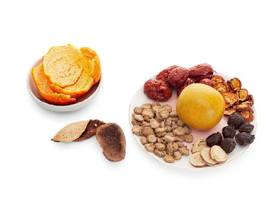
- 秋冬加强版梅子汤最近这些日子每天都在喝，还加了当归和山茱萸进去。酸酸甜甜，喝了口不干舌不燥，开胃消食，固表，补气血，助睡眠。每次喝完睡觉都特别好，还能祛痘。我发现喝一段梅子汤，唇周围和下巴上若隐若现的“小颗粒”，消失不见了。这下，又跟陈老师学会一招儿：加上两个鲜橘皮或橙皮，能防治流感。
——行者
- 防感冒效果非常好哦！ 孩子在学校，没有被流感病毒袭击哦！
——玉兔